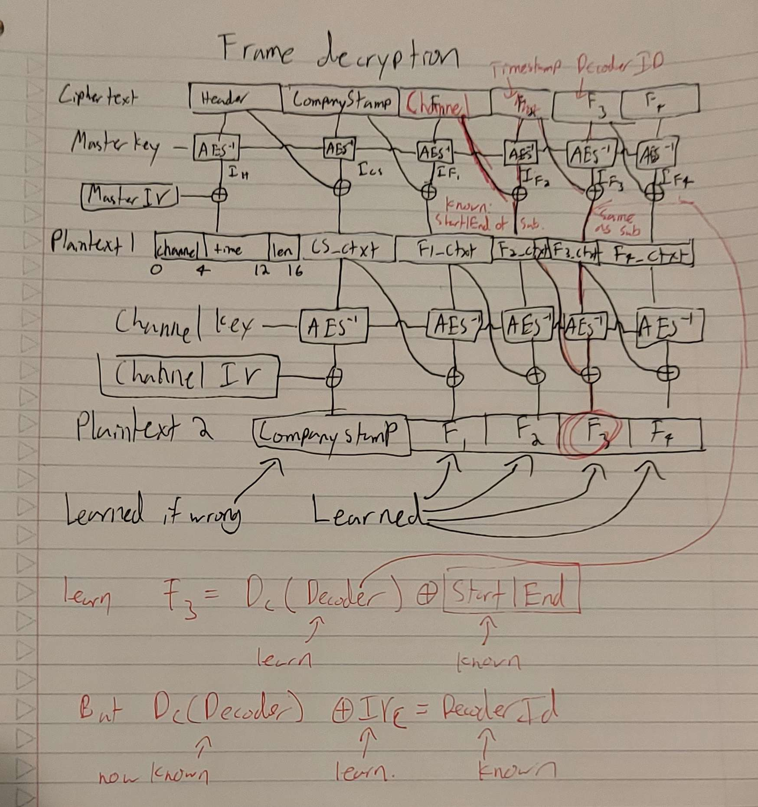

Bad Crypto and Infinite Birthdays
A writeup for MITRE's Embedded Capture The Flag competition
I competed in MITRE's 2025 Embedded Capture The Flag (ECTF) competition with the University of Michigan. I wrote a QEMU implementation for the MAX78000FTHR dev board used in the competition, integrated AFL into uart in QEMU system mode for some fuzzing capabilities, and then was really sad when the entire competition turned out to be attacks on bad crypto, rather than any binary exploitation. Learned a lot doing it anyways, such is life.
Anyways, the basic idea behind the 2025 ECTF was to create a satellite TV system. Each team made an "encoder" to sit at a secure site and encrypt TV frames for broadcasting and a "decoder" to distribute to customers to decrypt those broadcasted frames. Decoders were to accept subscriptions that specified time ranges and channel numbers, then only decrypt TV frames that fell into subscribed channels and times.
High-Level Satellite TV System (Credit: MITRE)
We submitted a design (we did some cool tree-based key derivation, but who cares about defense so let's skim over that), then moved in to the attack phase where we were given access to each other team's design and a decoder with their firmware on it. We were given an active subscription to channel 1, a subscription only valid for past timestamps on channel 2, a subscription targeting a different decoder on channel 3, and no subscription at all for channel 4; the idea was to use those and the decoder to decrypt every channel being broadcasted.
In terms of attacks there was, as previously mentioned, a lot of bad crypto and not a lot of binary exploitation. The organizers released a base design with a trivial buffer overflow in main; unfortunately, and I think inadvertently, that overflow wasn't exploitable since main never returned. It also happened to make a lot of other overflow-based attacks impossible; the input buffer was at the top of the stack at the top of RAM, meaning writing more bytes than expected would just crash the decoder without doing anything useful.
The only decent bit of PWN
We still managed a few binary exploitation attacks though. In one particularly neat attack, we could overwrite saved registers with the result of AES ECB decryption; we found an oracle for decryption of random data under that key, then farmed plaintext-ciphertext pairs for around 5 days.
Vulnerable update function. Note the call to decrypt_sym with no bounds-checking.
We eventually found a ciphertext/plaintext pair that happened to set the caller-saved register r4 on the stack to the address of a global secret key. Interestingly, main used r4 to store a pointer to an error string
"Failed to receive cmd from host" is stored in r4
All we had to do, then, was send the ciphertext in just the right spot of a subscription, then cause the error to trigger by sending an invalid packet. This leaked the master key & got us all flags. (We also looked to overwrite lr to jump to a buffer we controlled, but we found this ciphertext/plaintext pair first)
Cool crypto nonsense
The most interesting attack was on a team that used unauthenticated 2-layer AES CBC where the IV was a shared secret. That team implemented subscription messages as follows:
Subscription Message Format
First, the decoder ID is encrypted using a per-channel key and a static per-channel IV. Then that ciphertext is appended to the channel number, padded to 16 bytes, and the start and end times of the subscription. This entire message is encrypted with the master key and the static master IV.
The decoder, when processing subscription messages, first decrypts the entire message with the master key. It then verifies that the 12 bytes of channel number padding are correct, uses that channel's key to decrypt the decoder id, and verifies that it matches the decoder id baked in to the firmware. Master and channel keys and IVs are also baked in to the firmware.
Since the IVs are static and padding is verified in a way that gives no information, a lot of the classic CBC malleability attacks don't work here. We do, however, have one degree of freedom.
Potential attack on expired subscription
As seen above, if we know what the decoder id block decrypts to under the master key, we can substitute it for some other block we know the decryption of. Then we can set the timestamp block such that the result of the master key decryption is the same.
The decoder id will then match and the channel will be the same, but the end and start time of the subscription will be random. We could try that a few thousand times to eventually luck out, transform our expired subscription to an active one, and get a flag on channel 2.
We devised an 8 step plan to make this possible.
- Leak channel 1 IV
- Leak master IV
- Learn some plaintext/ciphertext pairs on master key
- Learn high-entropy plaintext/ciphertext pairs on master key
- Generate a 128-bit collision by taking advantage of the properties of the generalized birthday problem
- Use that collision to learn the decryption of expired subscription's decoder id ciphertext
- Generate subscriptions with random timestamps until we have an active subscription on channel 2
- Use the subscription to decrypt channel 2 frames and win

Andre Quimper Osores and I about to make a breakthrough, spend an hour implementing it, then realize we swapped some variables and actually we have nothing. Image credit Charlie Herz
1. Leaking Channel 1 IV
The basis of most of these steps was our ability to send arbitrary data as a channel 1 frame. Frame decryption in this design is generally pretty similar to subscription decryption.
Frame Format
First, the decoder decrypts the entire message with the master key. It then ensures that the header block is has a reasonable length and channel. If these checks pass, it decrypts the remainder of the message again using the channel key. The first block of this decryption is the "CompanyStamp," a static string they check has not changed. The remainder is the data transmitted in the frame.
Using the decoder functionality, we can learn 2 interesting things.
To learn Channel 1 IV, we sent the channel 1 subscription as a channel 1 frame.
Learn channel IV by sending subscription as frame
Because this team is decrypting subscriptions and channels with the same set of keys, we know that the value leading in to the xor before Plaintext2 F3 is the same. Normally that value would get xor'd with the channel IV to become the decoder ID of a subscription, but here it's getting xor'd with a known value. This means we can learn what it is before the xor, and therefore we can learn what the channel IV must be to produce the right decoder ID when subscribing.
2. Leaking Master IV
Send a frame Header and CompanyStamp as F2 and F3. Then we learn D_channel(I_CompanyStamp ^ Header) ^ I_Header
However, because we know the Channel IV, we know D_channel(I_CompanyStamp ^ Header); it must be true that D_channel(I_CompanyStamp ^ Header) ^ Channel IV == CompanyStamp, but we know CompanyStamp (it's static), so we can solve for the last unknown.
Therefore we learn I_header. But we know the plaintext that Header corresponds to; the channel must be 1, the time is given in the sattelite, and the length is always 64. Therefore I_header ^ Master IV == known, so we can solve for master IV
3. Learn some plaintext/ciphertext pairs on master key
Since we know what headers decrypt to and we know the master IV, we know I_header for every header.
4. Learn some high-entropy plaintext/ciphertext pairs on master key
Once again, by choosing nice values for F2 and F3 we can learn interesting things.
Set F2 = Header1 and F3 = Header2. You learn D_c(I_Header2 ^ Header1) ^ I_Header1, but you know I_Header1. You learn D_c(I_header2^Header1).
Next, set F3 = Header1, and F2 such that F2 ^ I_Header1 == I_Header2 ^ Header1. You learn D_c(F2 ^ I_Header1) ^ I_F2, but by construction D_c(F2 ^ I_Header1) == D_c(I_header2^Header1), which you know from the previous step. Therefore you learn I_F2, the decryption under the master key of random data. You can repeat this, setting Header1 = F2 to learn a new F2.
5. Generate a 128-bit collision by taking advantage of the properties of the generalized birthday problem
We can, by a series of decode operations to be explained in step 6, learn the decryption under the master key of the xor of any number of the I_F2 values obtained in step 4.
It's pretty easy to see that with >> 128 random strings of length 128 bits, some subset of them must xor to any value. The problem is finding the correct combination.
A Generalized Birthday Problem by Wagner outlines a solution to a similar problem, but a naive implementation of the algorithm presented in the paper would require several million samples. We modified the paper's algorithm to better suit our use case (rather than having k independent lists we wish to xor, we have one list, and we don't care how long the resulting xor chain is) and got it down to a few thousand samples.
Pictured: the index of 84 random bitstreams of length 128 bits that xor to 0
6. Use that collision to learn the decryption of expired subscription's decoder id ciphertext
From now on, I'll refer to a block we know the decryption of as An, where n is some number and its decryption as I_An.
- Set F2 = A2, F3 = A1. Learn D_channel(A_2^I_A1) ^ I_A2. Learn D_channel(A_2 ^ I_A1).
- Set F2 = A2 ^ I_A1 ^ I_A3, F3 = A3. Learn D_channel(A2^I_A1^I_A3^I_A3) ^ I_{A2^I_A1^I_A3}, but I_A3 ^ I_A3 == 0, so we learn I_{A2^I_A1^I_A3}
- Let E = A2^I_A1^I_A3. Set F2 = E, F3 = A4. Learn D_channel(E ^ I_A4) ^ I_E. Learn D_channel(E ^ I_A4)
- Let F2 = E ^ I_A4 ^ I_A5, F3 = A5. Learn D_channel(E ^ I_A4 ^ I_A5 ^ I_A5) ^ I_{E^I_A4_I_A5}
- Repeat steps 3 and 4 with E = E^I_A4_I_A5, and new values of A4 and A5 until you've exhausted your entire list.
At this point, as promised, we can learn the decryption of any combination of xors of I_As. Use the collision generator presented in step 5 to find some combination of I_As that xor to the ciphertext of the expired subscription's decoder ID, and learn what it decrypts to.
The above steps, as I originally drew them out
7. Generate subscriptions with random timestamps until we have an active subscription on channel 2
We now have a bunch of plaintext/ciphertext pairs under the master key, and we know what the decoder ID decrypts to. You can use this as described in the intro of this section to generate subscriptions to random timeframes until you hit the desired time range.
8. Use the subscription to decrypt channel 2 frames and win
The heading says it all, really
Conclusion
Competition was fun, most of the attacks were not as involved as the above. Lots of cbc malleability, bad signatures (don't forget to sign your iv!), etc. We got 3rd out of 116 teams, not bad for our first year.